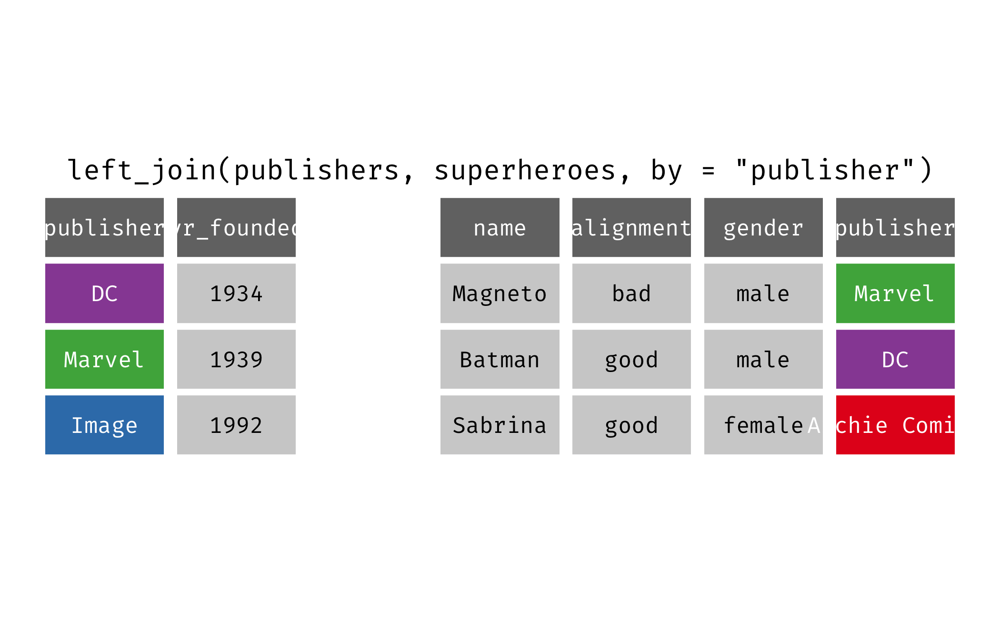

Data wrangling (II)
Lecture 8
Dr. Benjamin Soltoff
Cornell University
INFO 3312/5312 - Spring 2023
2/16/23
Announcements
Announcements
- Draft proposal rendered + committed + pushed to GitHub by 11:59pm tonight
- Peer evaluations in lab tomorrow
- Homework 2 distributed tomorrow
Option A
- Homework due next Wednesday
- Grades and feedback likely before February Break
- Some methods you need for the assignment will be taught next Tuesday
Option B
- Homework due next Friday
- Grades and feedback after February Break (and probably after project #1)
Agenda for today
- Transforming and reshaping a single data frame
- Transforming and reshaping multiple data frames
Setup
Packages + figures
YAML options
From last time
Data: SCOTUS
- Data from the Supreme Court of the United States
- Source: Supreme Court Database
- Observations: Each row represents a case
Scenario 1
We…
have a single data frame
want to slice it, and dice it, and juice it, and process it, so we can plot it
What percentage of cases in each term are decided by an n-vote margin (i.e. 5-4, 6-3, etc.)
Let’s recreate this visualization!
Livecoding
Reveal below for code developed during live coding session.
Code
scdb_case |>
# select relevant columns
select(term, majVotes, minVotes) |>
# filter to include post 1945 term cases
filter(term >= 1945) |>
# calculate vote margin for each case
mutate(vote_margin = majVotes - minVotes) |>
# calculate number of cases decided per term and vote margin
count(term, vote_margin) |>
# fill in all the missing combination of rows - plot won't look right otherwise
complete(term, vote_margin, fill = list(n = 0)) |>
# calculate percentages by term
group_by(term) |>
mutate(
n_pct = n / sum(n),
# convert vote_margin to factor variable for plotting
vote_margin = factor(x = vote_margin),
vote_margin = fct_rev(f = vote_margin)
) |>
# generate graph
ggplot(mapping = aes(x = term, y = n_pct, fill = vote_margin)) +
geom_area(color = "cornsilk4") +
# print the y-axis labels using percentages rather than proportions
scale_y_continuous(labels = label_percent()) +
# change the color palette
scale_fill_viridis_d() +
# label our graph
labs(
title = "U.S. Supreme Court decisionmaking since 1945",
subtitle = "Split between majority and minority justice votes",
x = "Term",
y = "Percent of total cases decided",
fill = "Vote margin",
caption = "Source: The Supreme Court Database"
) +
# match subtitle and caption colors to area borders
theme(
plot.subtitle = element_text(color = "cornsilk4"),
plot.caption = element_text(color = "cornsilk4")
)Bringing together multiple data frames
Scenario 2
We…
have multiple data frames
want to want to bring them together so we can plot them
Introduction to relational data
- Multiple tables of data that when combined together answer research questions
- Relations define the important element, not just the individual tables
- Relations are defined between a pair of tables
- Relational verbs
- Mutating joins
- Filtering joins

Mutating joins
inner_join()
inner_join()
left_join()
left_join()
right_join()
right_join()
right_join() reversed
full_join()
full_join()
Filtering joins
semi_join()
semi_join()
anti_join()
anti_join()
Assessing prognosticator performance

The prognosticator of all prognosticators
Import the data
Rows: 1,457
Columns: 7
$ name <chr> "Punxsutawney Phil", "Punxsutawney Phil", "Punxsutawne…
$ forecaster_type <chr> "Groundhog", "Groundhog", "Groundhog", "Groundhog", "G…
$ alive <lgl> TRUE, TRUE, TRUE, TRUE, TRUE, TRUE, TRUE, TRUE, TRUE, …
$ town <chr> "Punxsutawney", "Punxsutawney", "Punxsutawney", "Punxs…
$ state <chr> "PA", "PA", "PA", "PA", "PA", "PA", "PA", "PA", "PA", …
$ year <dbl> 2022, 2021, 2020, 2019, 2018, 2017, 2016, 2015, 2014, …
$ prediction <chr> "Long Winter", "Long Winter", "Early Spring", "Early S…Rows: 5,424
Columns: 13
$ region <chr> "Northeast", "Northeast", "Northeast", "Northeast", "No…
$ state_abb <chr> "CT", "CT", "CT", "CT", "CT", "CT", "CT", "CT", "CT", "…
$ id <dbl> 101, 101, 101, 101, 101, 101, 101, 101, 101, 101, 101, …
$ year <dbl> 1909, 1910, 1911, 1912, 1913, 1914, 1915, 1916, 1917, 1…
$ avg_temp <dbl> 28.00, 29.20, 24.90, 23.15, 28.05, 22.05, 27.50, 21.55,…
$ temp_hist <dbl> 25.58333, 26.09000, 26.16667, 25.85667, 25.63333, 25.52…
$ temp_hist_sd <dbl> 4.245360, 4.241218, 4.103158, 4.124311, 3.907804, 4.016…
$ temp_sd <dbl> 4.118598, 4.118598, 4.118598, 4.118598, 4.118598, 4.118…
$ precip <dbl> 4.005, 2.520, 2.810, 3.570, 3.765, 2.920, 2.330, 3.425,…
$ precip_hist <dbl> 3.476667, 3.526667, 3.378000, 3.411000, 3.446333, 3.352…
$ precip_hist_sd <dbl> 1.1784719, 1.2081292, 1.1442431, 1.1620681, 1.2039309, …
$ precip_sd <dbl> 0.9641827, 0.9641827, 0.9641827, 0.9641827, 0.9641827, …
$ outcome <chr> "Early Spring", "Early Spring", "Early Spring", "Late W…Prognosticator accuracy rates
Let’s recreate this visualization!
Livecoding
Reveal below for code developed during live coding session.
Code
# join the data frames
seers_weather <- inner_join(
x = seers, y = weather,
by = c("state" = "state_abb", "year")
) |>
# calculate if prediction was correct
mutate(correct_pred = prediction == outcome)
# calculate summary statistics
seers_summary <- seers_weather |>
group_by(region) |>
summarize(
preds_rate = mean(correct_pred),
preds_n = n(),
preds_se = sqrt((preds_rate * (1 - preds_rate)) / preds_n)
)
# generate the plot
seers_summary |>
mutate(region = fct_reorder(.f = region, .x = preds_rate)) |>
ggplot(mapping = aes(x = preds_rate, y = region)) +
geom_point(mapping = aes(size = preds_n)) +
geom_linerange(mapping = aes(xmin = preds_rate - preds_se,
xmax = preds_rate + preds_se)) +
scale_x_continuous(labels = label_percent()) +
labs(
title = "Prognosticator accuracy rate for late winter/early spring",
subtitle = "By climate region",
x = "Prediction accuracy",
y = NULL,
size = "Total number\nof predictions",
caption = "Source: Countdown to Groundhog Day & NOAA"
) +
theme_minimal()